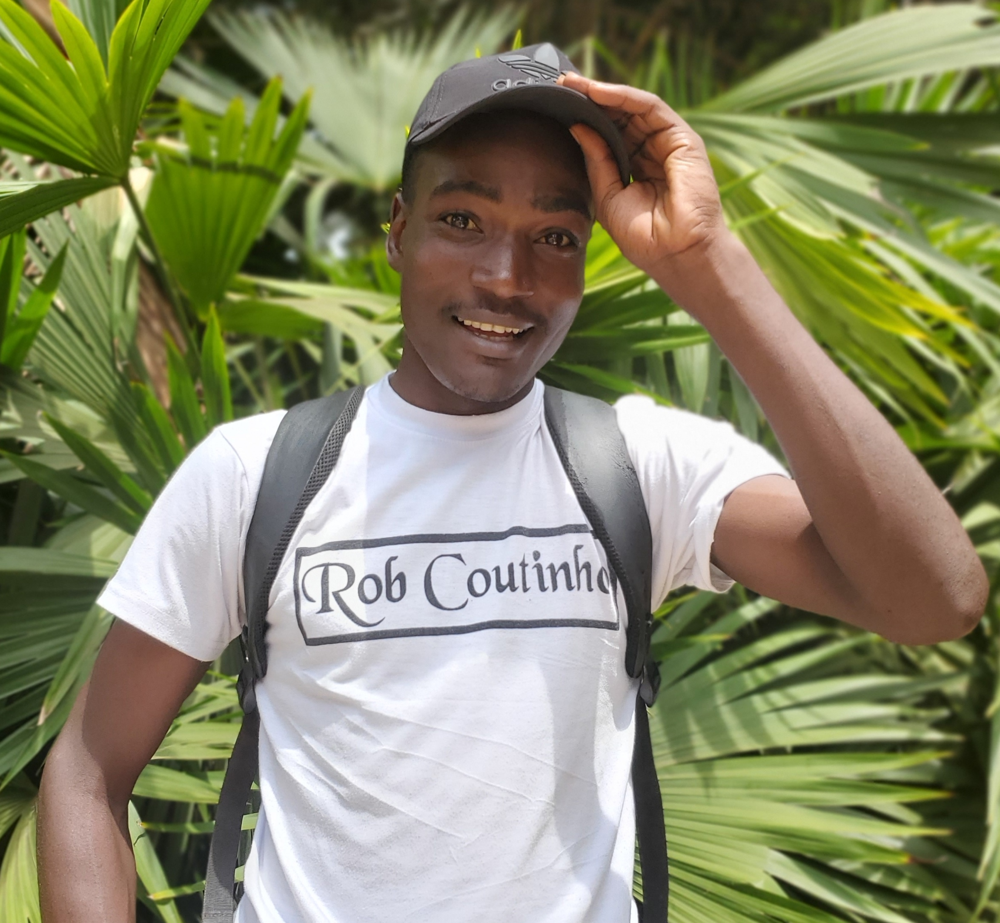

Ssebuma Robert
Computer Science Student
Ssebuma Robert commonly known as Robert Coutinho is a victoria University student currently finishing his final year in computer science. He is a musician, song writer and min website developer. Most important of all is data he does not support any political party nor liking politics.
Achievements
Through hardwork, sacrifies and devotion of a lot of time Ssebuma Robert have managed to recieve different certificates and melts from academics, personal research and lecturers asigned programs where he develop multiple applications and websites
Read more.....
| 2021-2025 | up coming |
| Azura Frontend | Microsoft |
| frontend web development | coursera |
Contributions
Like Gergely Orosz a full-stack developer and influencer who writes a blog and newsletter called "The Pragmatic Engineer", Ssebuma Robert have contributed to lots and lots devotions and determinations and they are as follows
Read more....
- Academic Excellence
- High GPA/Grades: Maintaining a strong academic record, excelling in key subjects like algorithms, data structures, software engineering, and artificial intelligence.
- Open-Source Contributions
- Contributing to Open-Source Projects: Actively contributing to popular open-source repositories on platforms like GitHub. This could include fixing bugs, adding new features, or improving documentation.
- Internships and Work Experience
- Contributing to Product Development: Participating in real-world software development projects, gaining hands-on experience in various programming languages, frameworks, and development tools.
- Leadership and Extracurricular Activities
- Tech Club Involvement: Leading or participating in campus tech clubs or student organizations like ACM (Association for Computing Machinery), IEEE Computer Society, or other coding clubs.
- Innovative Projects and Personal Development
- Developing Personal Projects: Building personal projects that demonstrate practical skills and creativity, such as apps, websites, or software tools. These can serve as a portfolio for future employers or collaborators.
- Community Engagement and Social Impact
- Tech for Social Good: Developing applications or platforms that address social issues such as healthcare, education, environmental sustainability, or accessibility for people with disabilities.